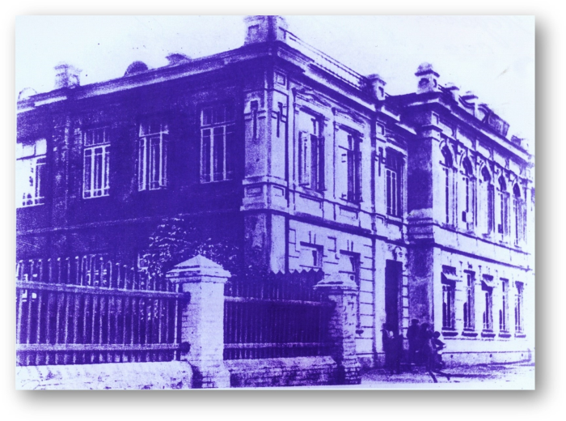

Интерактивная карта улиц города Гомеля:

Наш маршрут:
1.Вокзал
2.Проспект Ленина
3.Советская
4.Трудовая
5.Билецкого
6.Пушкина
7.Ланге
8.Кирова
9.Площадь Ленина
10.Пролетарская
Вам надо нажать на улицу, информацию о которой вы хотите узнать

Средняя школа №2 имени Г.М. Склезнёвав Гомеле (ул. Ильича, 53) — одно из старейших учебных заведений города, основанное 8 ноября 1926 года на базе первых советских школ Новобелицы. В 1930-е годы она стала русскоязычной школой №12, а в июне 1941 года прямо из её стен на фронт ушел добровольческий батальон из 250 учителей и старшеклассников. Сегодня учреждение носит имя своего выпускника — Героя Советского Союза Георгия Склезнёва, бережно хранит память о войне в школьном музее Боевой славы и успешно сочетает богатые традиции с современным инженерно-техническим профильным обучением. На данный момент ей исполнилось 100 лет.